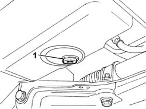
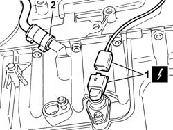
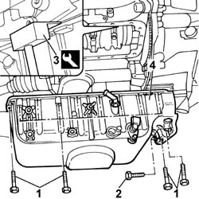

1020A20 CRANK CASE OIL SUMP - R + R CLEAN SEALS FOR SEALANT APPLICATION
- Path
- Procedures > 10 ENGINE UNIT > 1020 CRANKCASE SUMP AND COVERS > 1020A CRANK CASE OIL SUMP > 1020A20 CRANK CASE OIL SUMP - R + R CLEAN SEALS FOR SEALANT APPLICATION
- Kind
- repair procedure (removal / refitting; the operation number is the code)
- Applies to
- engines: 2.0 JTD 8V; all production periods
- Interactive page
- https://sloeber94.github.io/elrnDB-fDct/en/#/244000659
Applies to: engines: 2.0 JTD 8V; all production periods
 Removing
Removing
 Refitting
Refitting- Position the vehicle on the lift.
Op. 7055B54 UNDER-ENGINE GUARD - R R
1. Undo the exhaust plug and collect the engine oil in a suitable container.

Applies to: engines: 2.0 JTD 8V; all production periods
See in Op. 1084A16
1. Disconnect the electrical connection for the engine oil level sensor.
 | Description | Connector |
|---|---|---|
1 | Engine oil level sensor | K032 |
2. Disconnect the sump oil return pipe.

Applies to: engines: 2.0 JTD 8V; all production periods
1. Undo the perimeter retaining bolts securing the engine oil sump to the crankcase.
2. Undo the bolts fixing the sump to the bellhousing.
3. Using the tool, cut the sealant along the entire perimeter of the sump.
 | Description | Code | Function |
|---|---|---|---|
3 | Blade | 1.870.718.000 | Engine oil sump removal |
4. Remove the engine oil sump.

Applies to: engines: 2.0 JTD 8V; all production periods
Refitting
Removing- Clean the matching surfaces between the crankcase sump and the cylinder block/crankcase.
- Apply sealant to the oil sump fitting surface.
 | Description | Qty. | Component | Type | Classification |
|---|---|---|---|---|---|
. | Dow Corning 7091 | - | OIL SUMP | Silicone sealant | - |
- Position the crankcase sump in its housing with no axial deviation
- Fit the crankcase sump.
- Tighten the bolts fixing the crankcase sump to the recommended torque.
 | Value - daNm | Fastening | Component | Ø |
|---|---|---|---|---|
. | 1,6 | Bolt | OIL SUMP | - |
- Connect the electrical connection for the engine oil level sensor.
| Description | Connector |
|---|---|---|
. | Engine oil level sensor | K032 |
- Connect the sump oil return pipe.
- Tighten the engine oil sump plug and replace the gasket.
- Fill the vehicle with suitable engine oil.
Op. 0010T11 ENGINE OIL CHECK LEVEL AND TOP UP
Op. 7055B54 UNDER-ENGINE GUARD - R R
- Remove the vehicle from the lift.